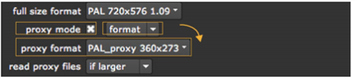

当合成 Nuke ,您可以在两种不同的模式下工作: 全尺寸模式 或 代理模式 。在全尺寸模式下，图像的读取完全像它们在磁盘上一样，并且所有位置都在这些图像的实际像素中。这是您希望用于准确反馈和渲染最终输出的模式。
在代理模式下，使用代理比例因子。所有图像和所有 x/y 位置都按此因子缩放。这以不同的比例产生相同 (或至少非常相似) 的复合。例如，可以使用完整输出分辨率的一小部分来加快渲染和显示计算。
除了上述内容之外，还可以读取一个单独的代理文件来代替完整大小的图像，前提是您已经在相关的读取节点中指定了一个。这可以通过使用更小的图像来进一步加快预览速度，该图像读取速度更快，也可以通过不需要缩放来节省时间。有关更多信息，请参见 读取节点和代理文件 .
您在项目设置中定义的代理设置会影响这两个代理 Nuke 使用代理比例因子和从文件中读取的代理生成。下面，我们讨论设置代理格式和/或代理比例，以及定义读取节点如何使用代理文件。
注意: 请注意，只有在激活代理模式时，才会使用图像的代理版本。当代理模式关闭时, Nuke 始终使用完整的资源文件。
在 项目设置 面板，您可以选择定义 代理格式 和/或 代理规模 您在代理模式中使用的。
对于代理 格式 此外，您可以定义图像分辨率以及有关偏移和像素纵横比的其他信息。使用代理格式时，缩放与完整大小/代理格式关系成比例 (不缩放到代理格式)。
对于代理 规模 ,你只定义一个简单的比例因子，每当代理模式被激活时，你的图像就会被缩小。例如，您可以使用 0.5 的比例因子将图像缩小到一半大小。
如果愿意，您可以定义代理格式和代理比例，然后选择在代理模式下使用哪个。代理比例更容易设置，但是代理格式可以让您更好地控制图像的低分辨率版本。下面，我们首先描述如何设置代理格式，然后如何定义代理比例。
| 1。 | 如果尚未打开，请选择 编辑 > 项目设置 (或按 S ) 以显示 项目设置 面板。 |
| 2. | 如果要在激活代理模式时使用代理格式 (而不是代理比例)，请选择 代理模式 > 格式 从下拉列表中。 |
| 3. | 从 代理格式 下拉菜单中，选择工作时要使用的分辨率以加快速度。请注意，您的图像没有按此分辨率缩放，但缩放与完整大小/代理格式关系成比例。 Nuke 将代理格式宽度除以完整大小的宽度，并将结果用作比例因子。 |
如果要使用的代理格式不在下拉菜单中，请选择 新 。的 新格式 对话框显示。
• 在 名称 字段中，输入新格式的名称。
• 在 文件大小 字段，定义格式的宽度和高度。
提示: 您可以在数字字段中键入公式以进行快速计算。例如，如果完整大小的格式宽度为 4096，并且希望代理格式宽度为 1/2，则可以输入 4096/2 在 新格式 对话的 文件大小 w 现场和新闻 输入 . Nuke 然后为你计算新的宽度。
单击 好 保存格式。它现在出现在下拉菜单中，您可以在其中选择它。
| 4. | 要激活代理模式并使用低分辨率格式进行计算和显示，请选中 代理模式 . |

或者，您可以在查看器控件中使用代理切换，或者按 Ctrl P ( Cmd P 在 Mac 上)。有关更多信息，请参见 使用查看器控件 .
| 1. | If it’s not already open, select Edit > Project Settings (or press S ) to display the Project Settings panel. |
| 2. | 选择 规模 从下拉列表中 项目设置 . |
| 3. | 使用 代理规模 输入字段或滑块，指定要缩放图像宽度和高度的因子。例如，如果要将它们缩小 50%，请使用 0.5 . |
| 4. | To activate the proxy mode and use the low-res format for calculations and display, check proxy mode . |

或者，您可以在查看器控件中使用代理切换，或者按 Ctrl P ( Cmd P 在 Mac 上)。
作为替代让 Nuke 生成代理时，可以在读取节点中使用第二个文件名指定代理文件 (有关如何执行此操作，请参见 加载图像序列 )。如果没有代理文件，可以通过激活代理模式并使用写入节点渲染完整大小的图像来创建一个代理文件 (请参见 渲染输出 在 预览和渲染 章)。
代理文件不需要匹配正在使用的代理解析。根据您的项目设置，完整的 res 或代理文件被缩放到所需的代理大小 (即, 通过采用全尺寸格式并按当前代理设置缩放计算的大小)。但是，如果代理图像与典型的代理设置匹配，则可以保存此时间。
| 1. | If it’s not already open, select Edit > Project Settings (or press S ) to display the Project Settings panel. |
| 2. | 从 读取代理文件 ,选择何时在读取节点中使用代理文件 (而不是完整 res 文件): |
• 从不 -永远不要在代理模式下使用代理文件。而是根据需要缩放完整大小的文件。
• 如果更大 -使用两个图像中较小的一个，如果它大于或等于所需的大小，根据需要缩小。否则，使用较大的一个，根据需要缩小或放大。这是默认选项。
• 如果最近 -使用最接近所需大小的图像，根据需要放大或缩小。
• 总是 -始终在代理模式下使用代理映像，根据需要将其放大或缩小。
您选择的选项会影响脚本中的所有读取节点，前提是代理文件已命名且代理模式已打开。
这里值得一提的是，当脚本以代理模式呈现时，处理以代理比例完成，图像输出转到写节点的文件名 代理 字段。如果不指定代理文件名，渲染将失败并显示错误。它从不调整代理图像的大小，也不会将代理图像写入完整大小的代理图像。
如果您发现有必要以高于其预期的原始分辨率的速度渲染 comp，您也可以使用代理分辨率从根完整大小格式扩展。例如，您可以使用 2k 复合材料在代理模式下生成 4k 或更高的图像。
你可能想这样做的原因是，对于不同的输出目标，你需要以更高的分辨率重新运行 comp，可能还有一些新的更高分辨率的元素。例如，您可能需要以打印分辨率重新渲染新的 CG 元素，而不是进行胶片渲染, 但是你不想浏览你的脚本并修改所有有 x/y 位置的东西。
当在代理模式下放大脚本的输出时，图像生成器节点以更大的大小渲染，可以在代理字段中指定更大的图像，并且与缩小一样, 所有 x/y 位置都按代理输出分辨率缩放。
如果您以前将脚本设置为使用小代理文件，则不必删除这些文件。确保 读取代理文件 在 项目设置 设置为除 总是 ,和 Nuke 读取较大的原始文件并放大它们。
如果你实际上有更大的代理文件，你应该把它们输入到 “读节点” 代理 字段和设置 读取代理文件 除了其他任何东西 从不 . Nuke 然后在代理模式下使用这些较大的文件。为了获得最大的质量，这些应该正好是所需的代理大小，这样就不会对它们进行缩放。例如，如果所需的代理大小 (由项目设置定义) 为 4 K，则代理图像应该正好为 4 K。否则, Nuke 缩放它以匹配项目设置，这降低了质量。
要呈现放大脚本的更大输出，您需要激活代理模式，并在 代理 写入节点的字段。然后将较大的图像写入这些文件。
在代理模式下工作通常很聪明，因为大多数操作在低分辨率显示器下工作更快、更有效。当您需要更高的精度时 (例如，当拉动键或跟踪时)，或者当您准备好最终渲染时，您可以在低分辨率和高分辨率之间切换。
| 1。 | 单击的空白区域 Nuke 窗口。 |
| 2. | 新闻 Ctrl + P 切换显示模式 ( Cmd + P 在 Mac 上)。 |
Nuke 自动缩放脚本元素 -- 贝塞尔形状、 b样条形状、绘制曲线、垃圾掩模、跟踪曲线等 -- 以保持图像上的原始位置。
|
|